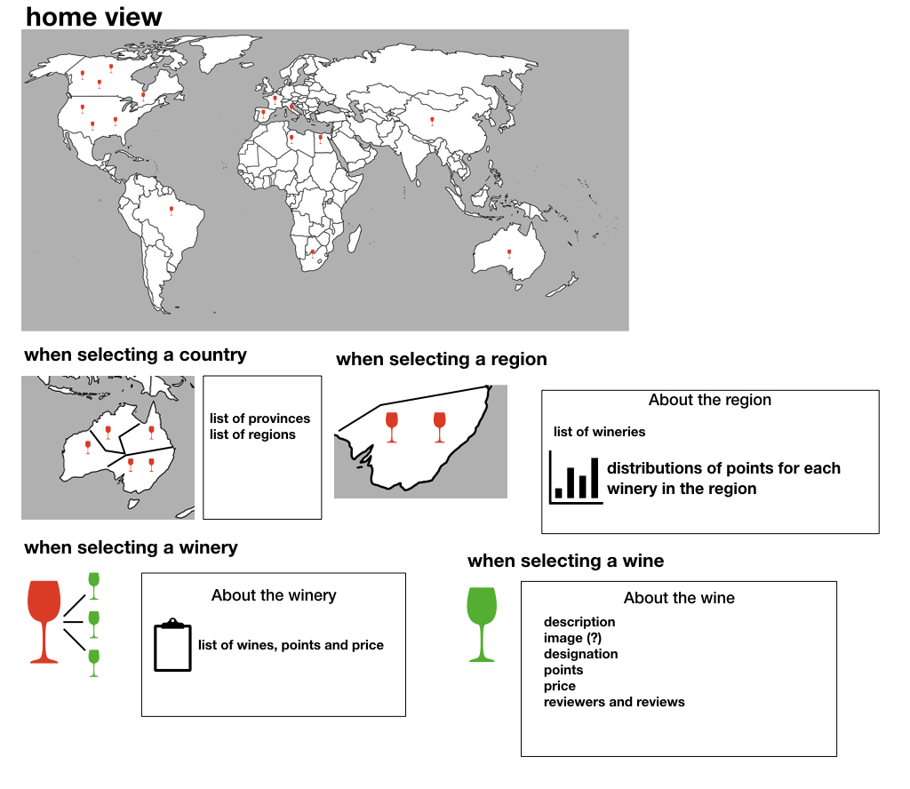

Assignment 1
Question 5: Header CSS Style
Header Color Test
Question 6: Small, "Interesting" Image

Question 7: JavaScript Image From Outside Body:
Question 8: List of Links To "Interesting" Visualizations:
- Economy complexity This is a visualization of world trade. The data is presented through 6 seperate layers including a "Country Stacks" layers akin to stacked barplots of all exports per country, and a more detailed "Map View"; a visualization of all exports of a specific product category across the glibe. We will focus on these two and ignore the more technical "Products Space/Stacks" . Also, when a country is selected, a small linked thumbnail appears in the bottom left corner leading to a seperate page for a more detailed breakdown of the exports of that country, where it is given prominently as a Stacked Chart or a Product Tree Map (And once more 4 other visualization that are too technically steeped in economics to decipher).
- The evolution of the web The 'Browsers and Technologies' section tells the story of how web browsers have evolved from 1990 to 2013 showing the introduction over time of different technologies and web programming languages.
Positive aspects:
There appears to be an impressive amount of data represented in one space. For example, in the "Country Stacks" view, selecting "Electronic Filaments" from the stacked product bar of Germany shows the export connections to all other countries that import that product. The "Map View" with all selected products categories gives a quick, sensible, overview of an economy's diversity; in the case of Saudi Arabia for example, it is clear that it relies almost exclusively on petrolium products while a country like Brazil is much more diversified.
The seperate charts page contains a "Stacked Chart" graph which is a stacked histrogram of product categories by year for the selected country. The scale is appropriate, the colors are visibly seperable and differences are well highlighted by product and by year.
Negative aspects: Already there is an issue with resolution, the font is disproportionately smaller than everything making it difficult to read regardless of resolution. Finding a single product such as "Electronic Filaments" in a category of perhaps thousands of niche products can be a challenge; it puts to question the purpose of including such level of detail and data in the first place if it is not utilized properly. Due to the nature of the graph itself, the stacked barplots are 3-dimensional and widely seperated making it difficult to do a comparison between disparate countries, outside of obivously massive differences in exports. (Ironically, tilting the graph to a horizontal level forces an unintended clean 2-dimensional barplot). The "Map View" suffers from the same setbacks as the "Country Stacks" view; unless given massive differences in exports, comparisons can become very difficult. China for example has a global export output that is atleast twice as Germany's but that is not clear from the "Map View". Infact, China appears more pale as product export points are more spread out over a much larger landscape.
Finally, in a seperate page there is the Product Tree plot, and a Stacked Chart. The Product Tree Plot gives a breakdown of percentage of exports in terms of areas but it can be misleading due to confusion with (1) orientation (verticle and horizontal), of equally sized rectangles and (2) equally sized rectangles having prominently different shapes (like a perfect square and a thin-and-long rectangle). Both these aspects of the graph can lead to perceived differences that are not actually there. Sadly, a pie chart could be more appropriate in this case.
Positive aspects: When opening the web page the effect of running over the timeline gives a sensation of how complex the evolution of web browsers has been in the period analyzed. It is interesting to see how the web browser changed their aspects bly clicking on their icons and having a pop up appearing. Using different colours for each of the technologies helps the user to distinguish between them.
Negative aspects: Nevertheless, the distinction is no longer visible and it gets messy from 2007 onwards when the number of technologies introduced increases. The visualization could be improved turning the coloured lines in coloured concentric circles around the number of the version of eah browsers. This would reduce the messy effect at the end of the timeline and would actually show all of the information which are now hidden by overlapping unuseful lines.
Adham
- What type of data would you like to visualize, and where would you get access to this data? The evolution of music genres over time in terms of tempo and key. The dataset is the 10,000 song subset from the million song dataset project (found here) which contains a record of songs, artists, inferred genre, key, tempo and other statistics such as loudness.
- What story would the combination of text and visualization tell? It would highlight major tonal shifts in contemporary music with seminal album releases
- Who is the intended audience? Musics enthusiasts, academics, practitioners
- A sketch/mockup of the visualization. At the very basic level, a histogram of time and tempo for each genre, along with a stacked histogram for keys. Also included is a seperate highlitable interactive timeline for influencial music releases where a notable shift in keys or tempo or both is evident.
Carlotta
- What type of data would you like to visualize, and where would you get access to this data? The type of data I would like to visualize is a dataset of wine reviews. The data is available here Wine reviews.
- What story would the combination of text and visualization tell? The story would tell how the distribution of points in the reviews are spread across countries and their regions and how they correlate to the type of wine.
- Who is the intended audience? The intended audience would be wine someliers, wine enthusiasts, wineries and Italians living abroad.
- A sketch/mockup of the visualization.
